CSO Policy Advocacy & Proposal Training Graphic
Official release for the capacity workshop training 20 CSO leaders in policy briefs, competitive proposals, elevator pitches, and AI research tools.
Official release for the capacity workshop training 20 CSO leaders in policy briefs, competitive proposals, elevator pitches, and AI research tools.
Founder and Lead Mohammed Labaran Sani walking civil society representatives through evidence synthesis and policy brief structuring.
Civil society representatives collaborating on climate proposals using laptops.
Participants assembled in Katsina conference hall for proposal & policy training.
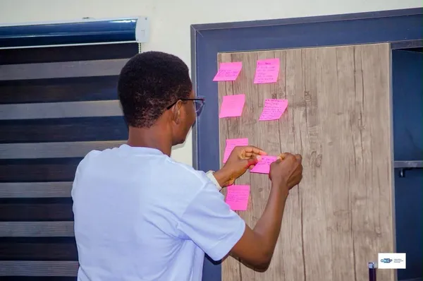
CSO WorkshopUsing participatory sticky-note methods to map local climate adaptation priorities.
CSO representative presenting key community resilience considerations.
Students and youth champions with economic tree seedlings outside school.
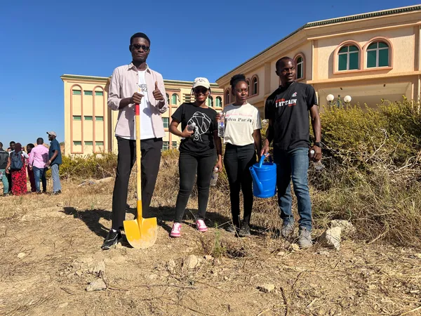
Tree PlantingVolunteers carrying shovels and seedlings for restoration in Katsina.
Three GNEP project leads holding tree seedlings in polybags.
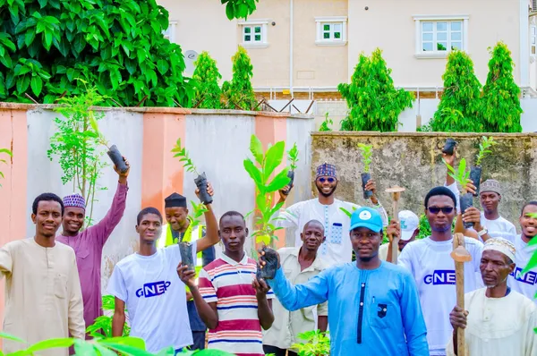
Tree PlantingCivic participants and youth holding seedlings before field deployment.
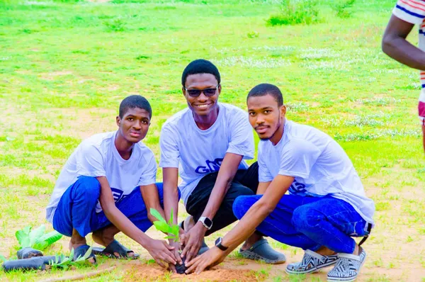
Tree PlantingYouth team kneeling in grass planting economic tree seedlings.
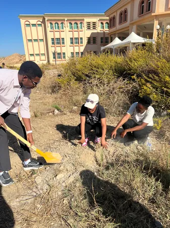
Tree PlantingPreparing planting pits in challenging dryland terrain.
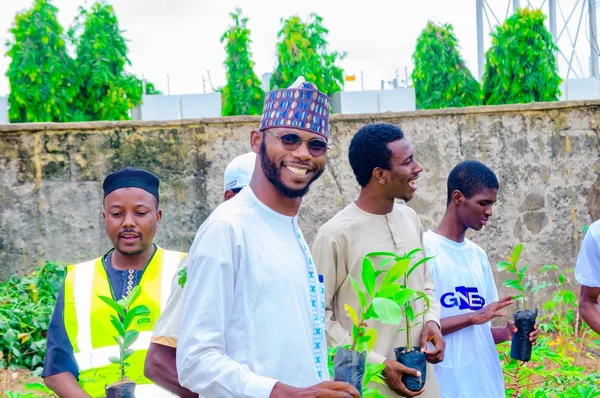
Tree PlantingMohammed Labaran Sani and volunteers inspecting seedlings in Katsina.
Lead facilitator outlining policy brief structure and legislative engagement.
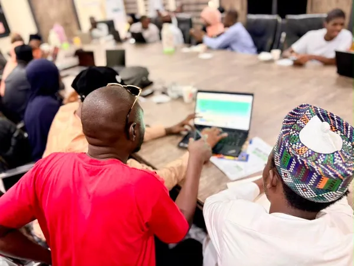
CSO WorkshopHands-on laptop work sessions drafting competitive project proposals.
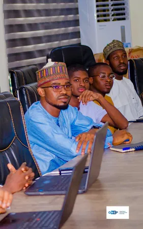
CSO WorkshopCivic organization leads following technical presentation modules.
Speaker demonstrating persuasive communication and elevator pitch skills.
Youth volunteers mobilizing school students for ecological awareness.
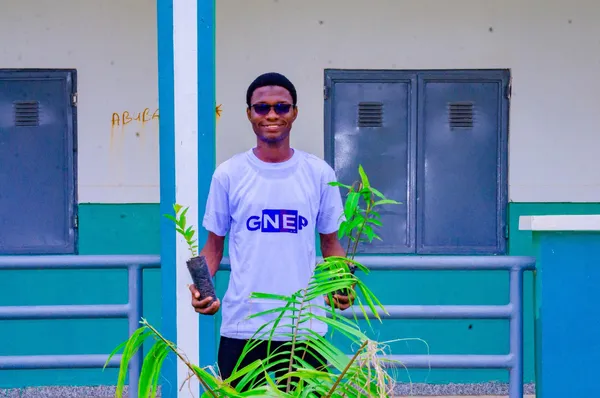
Schools & YouthYoung advocate in GNEP t-shirt holding sapling ready for planting.
Presentation translating climate science into disaster risk reduction briefs.
Volunteers planting indigenous seedling in Katsina field.
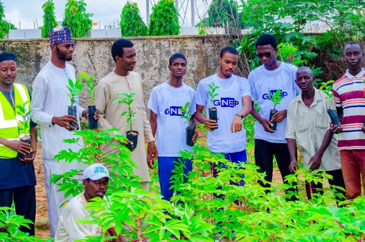
Tree PlantingLine of community volunteers holding seedlings during AYINET joint drive.
Founder Mohammed Labaran Sani presenting documented field results.
CSO participants examining funding criteria and research data.
Full workshop cohort photo at Katsina State policy & proposal training.
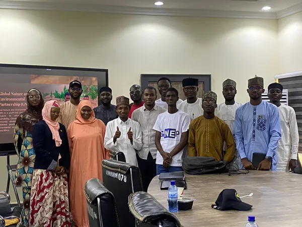
Tree PlantingVolunteers planting economic seedlings to counter desertification.
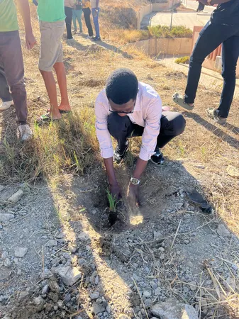
Tree PlantingTeam of youth digging and planting under clear Sahelian skies.
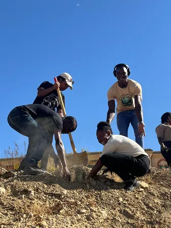
CSO WorkshopYouth leader practicing climate action elevator pitch.
Mohammed Labaran Sani with project leads holding tree seedlings.
Partner or Collaborate With GNEP Africa
Connect with our research, policy, and field operations teams in Katsina State to collaborate on environmental action.